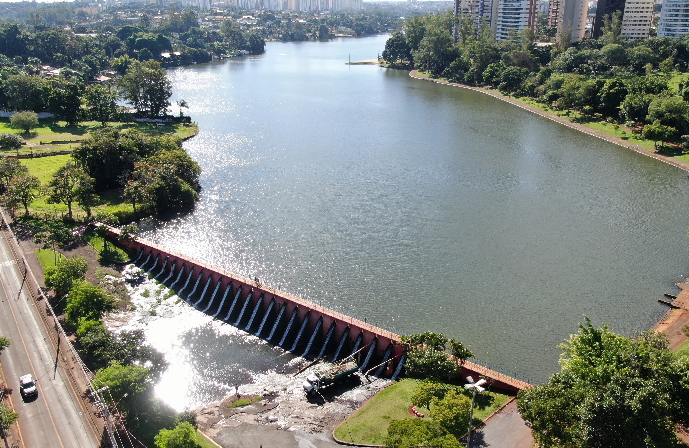
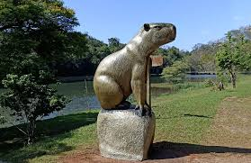

Lugares para visitar em Londrina
Lago Igapó
Um dos principais pontos turísticos de Londrina, conhecido por sua beleza e área de lazer.
Parque Arthur Thomas
Um parque urbano que oferece áreas verdes, trilhas e atividades ao ar livre.
Um dos principais pontos turísticos de Londrina, conhecido por sua beleza e área de lazer.
Um parque urbano que oferece áreas verdes, trilhas e atividades ao ar livre.